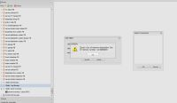

Hi Experts,
I'm using OpenRemote with KNX. When I do a test design, everything is working fine now. However when I insert all available commands (few 100's) and sensors, I get into trouble creating a slider or switch.
Is it my PC or browser which is the bottleneck or am I doing something wrong?
Thank you for your help!
See screenshot:

{kind=link}
{kind=link}
{kind=link}
|
It might be a browser issue. |
|
Hi Marcus, Thank you for your swift response! It is working fine with the link you've provided! The right click to create a switch by selecting an On and OFF command is not working. Anyhow I can proceed with playing around, once again thank you for your support! Cheers, |
|
Are you sure you selected a switch sensor in addition to the 2 commands? I can see from the screenshot that you correctly selected the 2 commands and they seem to have the correct name. |
|
Hi Eric, Yes I think I'm doing the right things. I've uploaded all commands via CSV file to the UI. Then I select the ON and OFF command, right click and make switch ... error Regards, |
|
Also make sure you've cleared your browser's cache first when switching between two different versions of the app. |
|
If you're selecting ON and OFF command then right-clicking, then it will not work. The idea on this part of the "object model" is: So for KNX, in addition to the ON and OFF command, you should have a STATUS command. PS: I know the names are confusing and this will be reviewed at some point down the road but it's just terminology and it should still work for now. |
{kind=link}